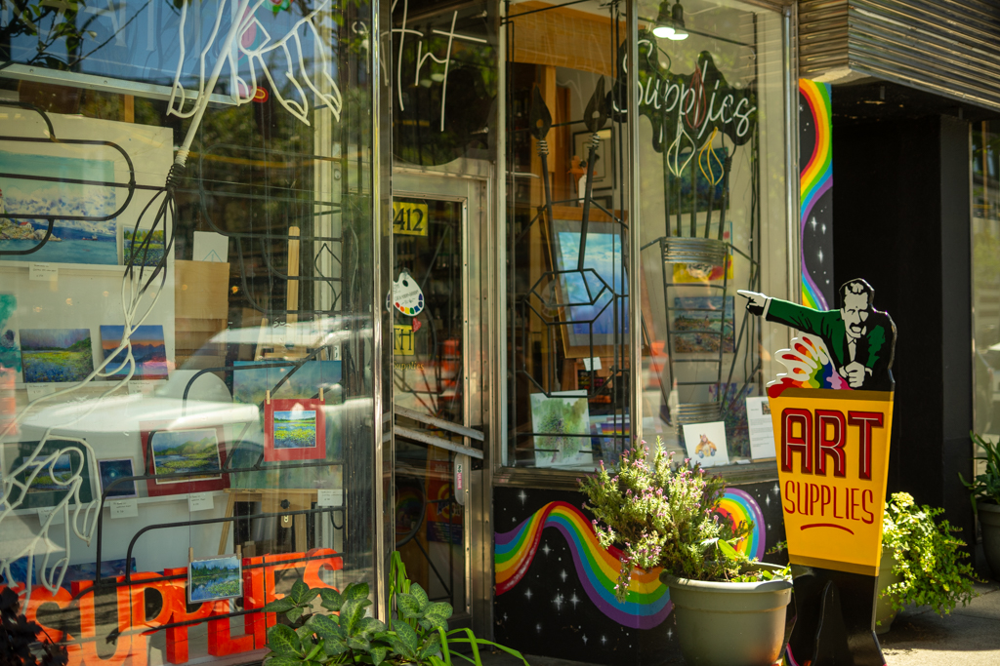

Full day (Vintage, Shopping, Eating & Drinking) on Main
Tap a stop to read more — open the guide to customize this route.
Mount Pleasant has so many great spots and this plan will take you from the Skytrain, all the way up Main, and back, with a mix of eating, shopping, and exploring. When you get off the Main-Street Science World Skytrain, you can head up the street to enter into the district with all the shops. Stop off at GENE coffee bar for a quick drink and take in the views of where you came from.
You can then shop around in that close vicinity, F as in Frank, Glory Days, Fish Market Studio, Pulp fiction books, and Mintage Mall.

2. F as in Frank Vintage Clothing

3. Glorydays Fine Goods

4. Fish Market Studio
5. Pulpfiction Books

6. Mintage Mall

7. Rath Art Supplies
Once you've had enough shopping, it might be time for another coffee, tea or light snack and a perfect chance to rest your legs while you recharge for the next leg of the walk. Head up to Federal Store just off Main street to grab a seat on the patio and watch the bikes wizz by.
Once you're done, if you want some more shopping, Corner Store will be waiting for you before you head back onto Main to see what else the neighborhood has in store.
By this time, you're probably starving for lunch, so it would be a good chance to stop at Anh and Chi for lunch before you continue further down for a bit more shopping and browsing.
You can then continue heading further South — head straight to Woo to See you and Eugene Choo for new clothes expertly curated.


After lunch, you can keep walking down Main to check out Exile, Front & Company & their gift shop.

By this point, you may be shopped out, so it would be a good time to grab a snack at Liberty Cafe, enjoy the patio, recharge in the sun, and prepare for an evening of drinking and adventure.

Since you already ate at a restaurant at lunch, I'd recommend heading to AJs or Superbaba. But call ahead and order because we are heading for dinner in the park.
Once you pick up your food, keep walking west where you will find 33A and B and pick up a six pack so you can enjoy some early evening sun at Jonathan Rogers park.
After a couple beers and pizza, if you still have room for ice cream, you can walk off that evening meal and head to Earnest Ice cream, where you can then head towards the seawall for a quick view of the city and mountains before heading back to the skytrain station.